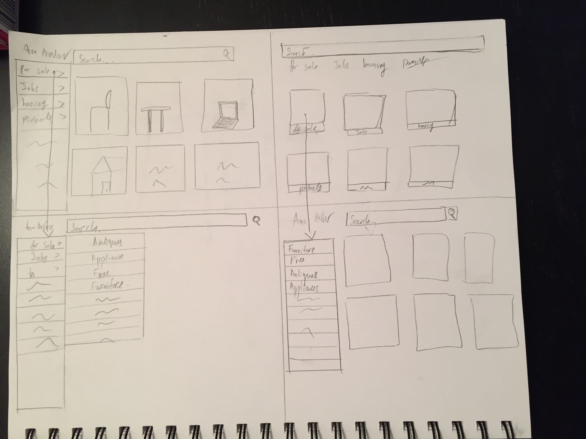

Craigslist redesigned to be tailored towards students buying furniture.
Link to interactive prototype:https://projects.invisionapp.com/share/JQAGBGKN3
To get initial idea of how Craigslist works, I navigated through the website, inspecting its features and flows.
Link to feature analysis:https://docs.google.com/document/d/14B9zeo_uD_8TLmFWLd-cfSaKHOa7I25MNx7XtV1mwbQ/edit?usp=sharing
Additionally, I conducted a brief competitive analysis with Etsy, OLX, Kijiji, and IKEA.
Link to competitive analysis:https://docs.google.com/document/d/1vpTpNsCsAgKniWvKQ5vwKEaJjcYKwIfo-o_si_a6OZg/edit?usp=sharing
In order to get insight into Graigslist and how students use it, I conducted interviews with 3 students. From the interview, I got insights into problems, such as:
In parallel with the interviews, I also gave the students teh task of 'buying a table' on Craigslist. I observed their behavior and the thoughts and challenges they had with the task. Here are some things I learned
Once I got a sense of direction from the qualitative research and evaluation, I conducted a survey to attempt to validate some ideas and get better sense of the population.
I received response from 67 people, many of which were students.
Link to survey results:
The survey reviewed some of the following insights
Based on the results, I started sketching potential prototypes
Finally, I created a digital prototype using Sketch and InVision
https://projects.invisionapp.com/share/JQAGBGKN3